Stage B1 clubs and invitations. Select a screen to open its self-contained SVG. The PDF and implementation guide contain the decisions, recovery words, accessibility rules and route contracts.
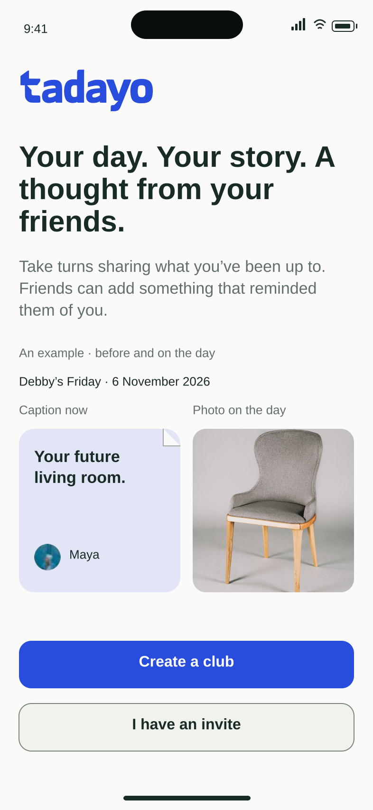
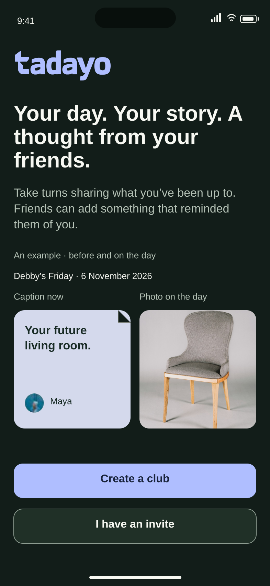
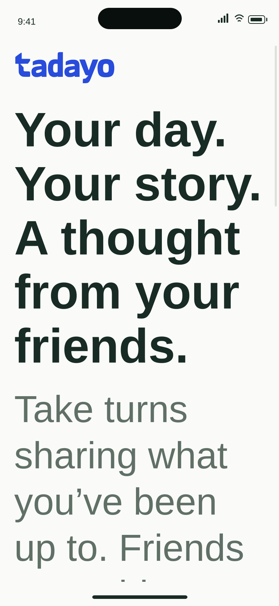
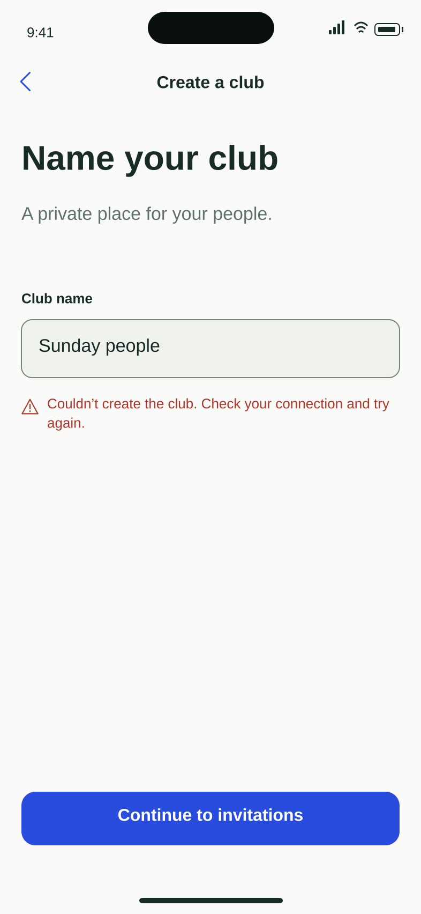
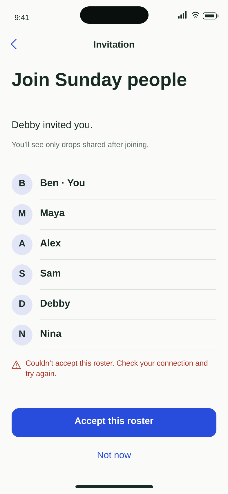
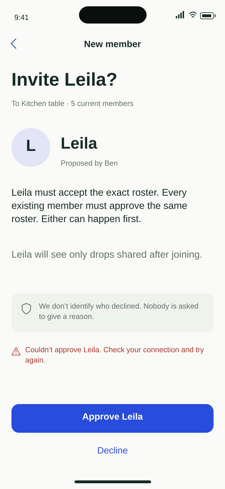
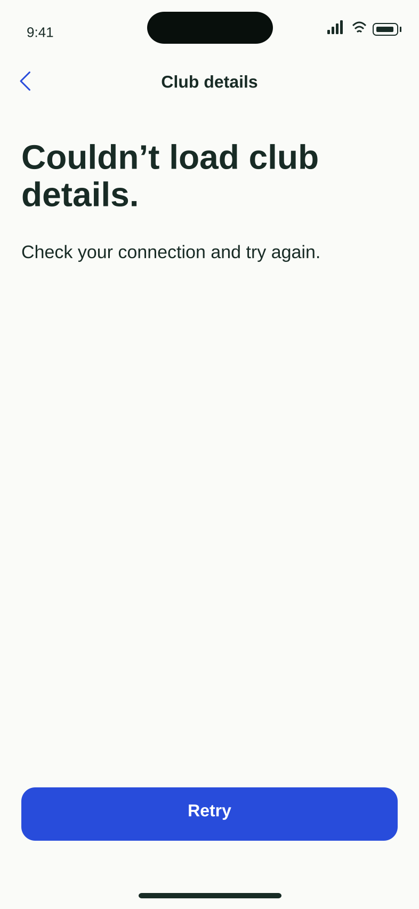
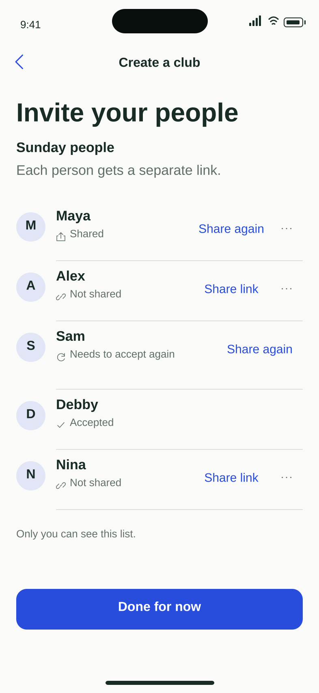
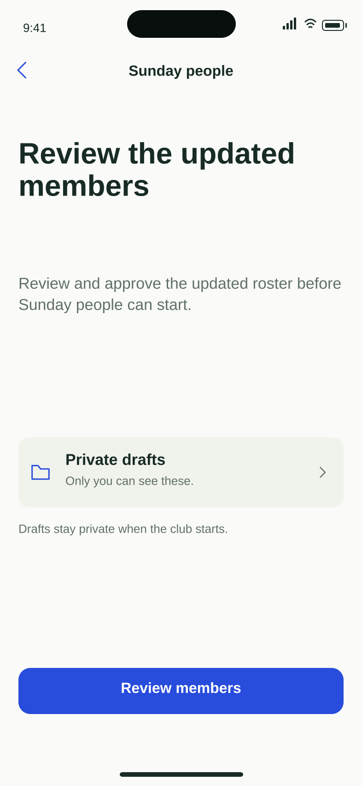
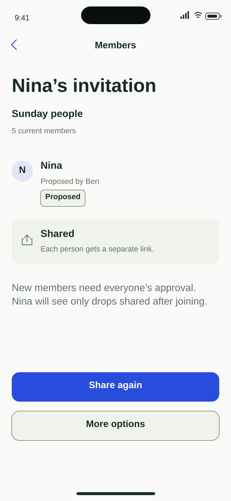
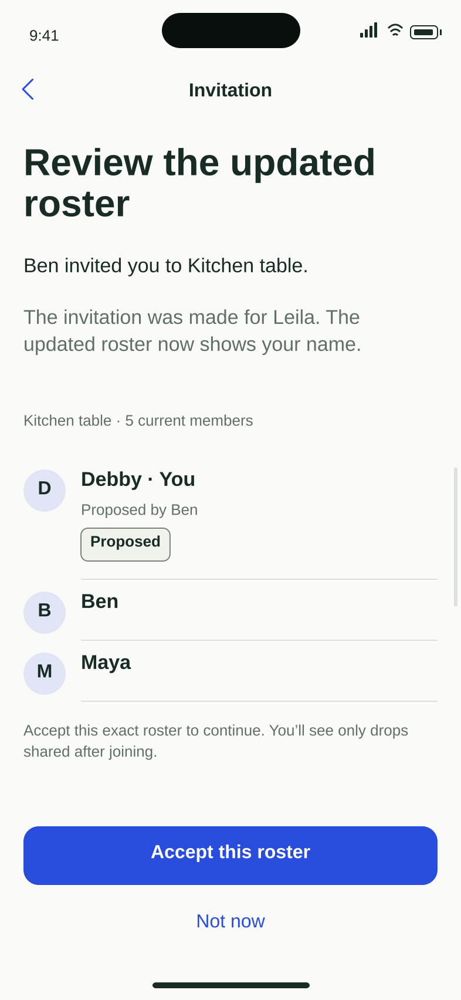
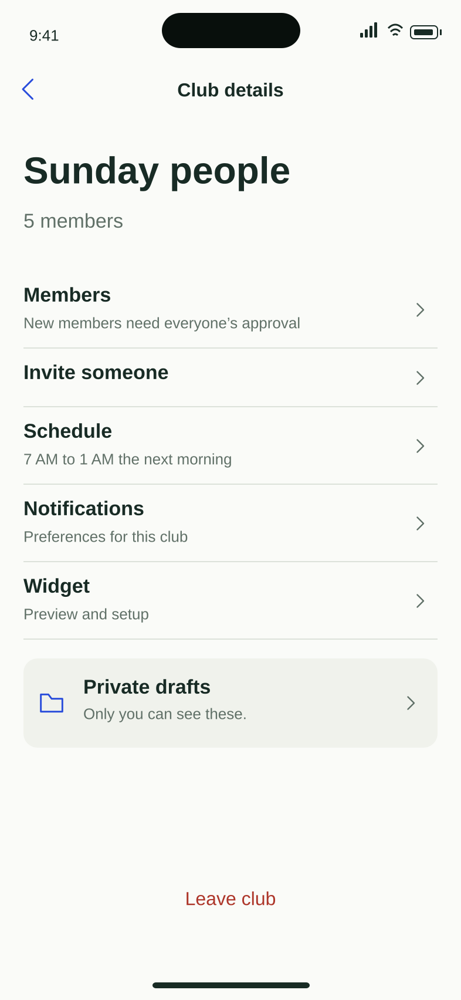